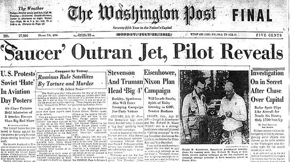
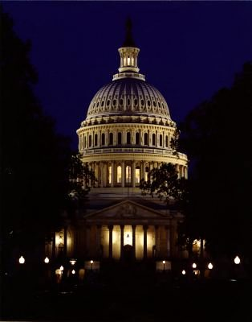

CINCINNATI! RETURN TO MAIN HOME PAGE Do you have any information
| Copyright ® 2002 - 2003 Unauthorized duplication
|
On two consecutive weekends culminating on July 26, 1952, UFOs weresighted visually and on radar over the hot summer skies of Washington D.C.Alarms sounded and planes took to the skies. The nation was captivatedand banner headlines shouted the event across the land. The public wasmystified and the event has withstood firm explanation to this day.
Now a half century later on the 50th anniversary of that legendaryUFO 'invasion' of the nation's capitol, our collective cage has apparentlybeen rattled by yet another mystery occurrence.
Around 1 o'clock in the morning of Friday July 26, 2002, a pair ofAir Force F-16 jets were scrambled from Andrews Air Force Base in Marylandto investigate an unidentified object tracked by NORAD radar systems.
The unidentified radar target was apparently moving toward the WashingtonD.C. vicinity, approaching the Temporary Flight Restriction Area designatedafter the terrorist attacks of September 11, 2001.
According to Major Mike Snyder, Command Spokesman for both NORADand The U.S. Space Command, this particular track was considered 'of interest.'
"Its radar signature, speed and elevation fit the criteria of a smallprivate aircraft," Major Snyder later informed. "It was viewed as a reasonablesecurity precaution to ascertain the intentions of the track and implementa graduated response."
Major Snyder said that in extreme circumstances, such a responsemay include use of lethal force.
NORAD alerted the 113th Air National Guard wing of Andrews Air ForceBase to investigate the unidentified radar target as it approached themost sensitive area of the country. Men took to action and jets were scrambled.
Fueling this already tense situation with a healthy dose of mystery,the radar target 'faded' from NORAD detection systems.
And so it goes, the pilots found nothing and saw nothing, so theyreturned home to a happy ending. Or that's what the official line is.
Meanwhile, all hell broke loose in nearby Waldorf, Maryland as frightenedresidents took to the streets in droves amidst an aerial explosion of noiseand tumultuous commotion.

"It was this object, this light blue object, traveling at a phenomenalrate of speed, followed by this Air Force jet... right behind it, chasingit," Rogers said to reporters. "I told my neighbor, 'I think those jetsare chasing a UFO.' "
Others also saw the bedlam and the switchboards of talk radio stationWTOP in Washington D.C. lit up with queries of concern. Some describeda blue light, some thought it was orange or white. Some said it had softedges. Some said it made no noise. To some, it appeared that military jetswere in pursuit.
A July 26, 2002 newscast on the FOX News network told of numerouseyewitness claims that the unusual light had been chased by military jets.One witness was quoted as saying the jets were right on its tail. "As thething would move, a jet was right behind it..."
But Major Snyder is doubtful of the observational cognizance of thecitizenry of Waldorf, Maryland.
"People can see what they want to see..." he said. "What these peoplereported could have been exhaust from the jet itself, depending on whetheror not the pilot was on or off afterburners. We don't think it was a UFO."
However, Major Snyder could not explain the exact nature of NORAD'sunidentified radar track.
"In this situation we found nothing at all," the Command Spokesmansaid. "The radar return may have been caused by a small plane flying low,and sometimes that will cause them to drop on or off the radar."
When asked about the radar targets peculiar method of departure by'fading' from the radar screens, Major Snyder vocalized his response witha militaristic manner of assurance: "I don't have any info on this, butit's not uncommon for either routine or unidentified radar returns to fade.Sometimes a plane will simply come down and land on a small airport inthe area or on a grassy strip."
The Command Spokesman was then asked if he could inform of a location,speed and altitude the object was last observed, and he said: "I cannotget into this with any specificity."

"NORAD is absolutely not concerned about this situation," Major Snydersaid. "We posture our forces according to the threat and at no time didthis incident involve any threat to our country."
The Major also does not think that President Bush was awakened bythe unusual episode and has no reason to believe that the Secret Servicewas cautioned.
"It was an innocuous happening," he remarked.
Yet while Major Snyder and NORAD think this 'innocuous happening'has no relevance to the security of our nations capitol, his hypothesisregarding the nature of the unidentified radar track argues just the opposite.Suppose this was a small private plane that somehow eluded the F-16 jetsscrambled to intercept it. Wouldn't that plane and its grassy 'landingstrip' hideaway somewhere near the flight restriction zone around WashingtonD.C. pose a security concern if manned by hostile operatives?
It sure seems like one heck of a security concern.
And how about the citizenry of Waldorf, Maryland whose early Fridaymorning was temporarily disrupted by aerial chaos and bedlam? Did theysee a UFO? If there was a UFO, the F-16 pilots certainly aren't talking.Of course they wouldn't anyway, if ordered not to do so.
Oh, and the factual actuality of UFOs just might be another littlesecurity concern.
But when it's all said and done we'll probably have another unsolvedmystery on our hands. And in time the mystery will slip away into thatbig black hole where all the "unresolved mysteries" are collectively forgotten.
But perhaps the most remarkable part of this whole story is how ittakes place fifty years to the day of the legendary 1952 UFO invasion ofWashington D.C.
And just how interesting is that?
Kenny Young is a Kentucky State Section Director for the Mutual UFO Network (MUFON) and former Public Relations Director for the Tri-StateAdvocates for Scientific Knowledge. Several of his articles have appeared in The MUFON Journal, UFO Magazine and Equinox. He is a regular paneliston UFO Report and UFO Update: LIVE television programs and is employed as Infochannel Coordinator for the Telecommunications Board of NorthernKentucky and a freelance videographer and editor. His website is https://kenny.anomalyresponse.com